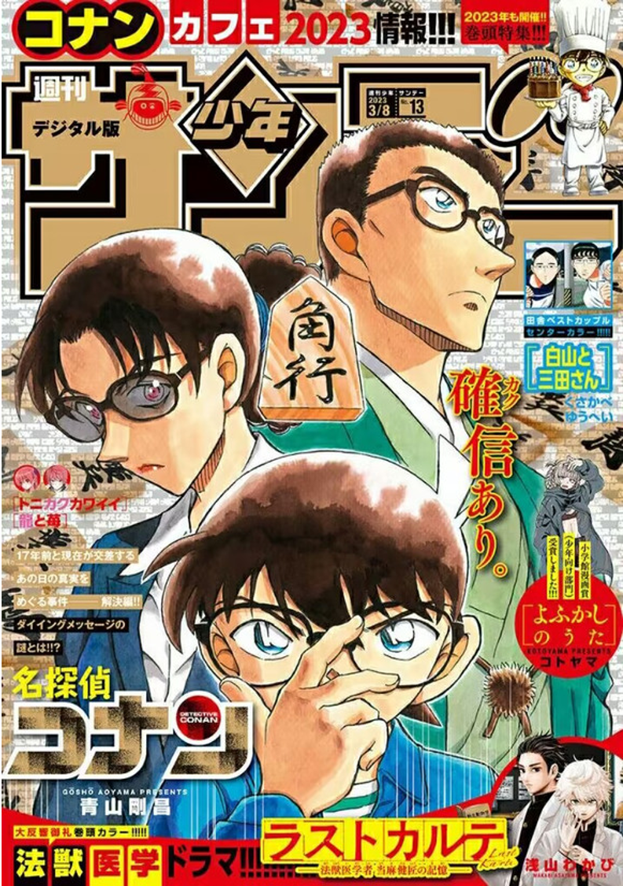
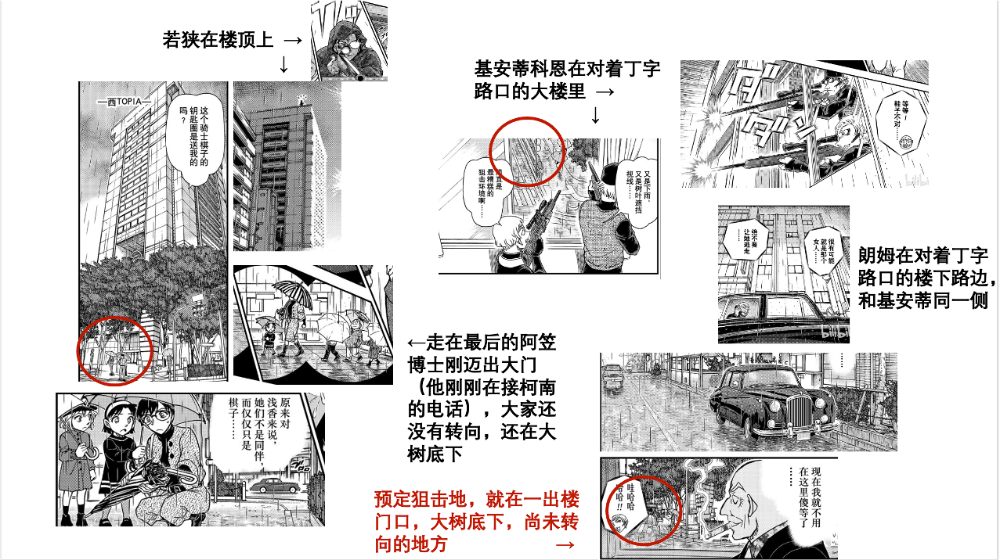
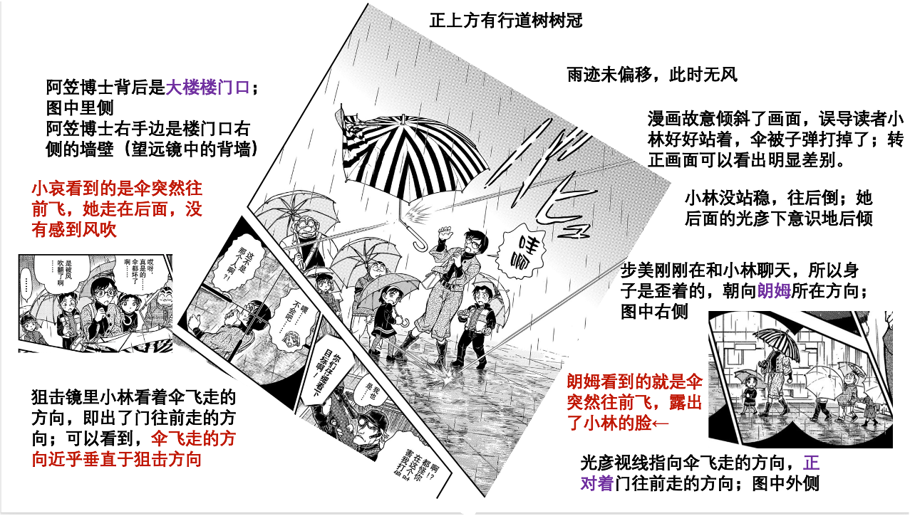
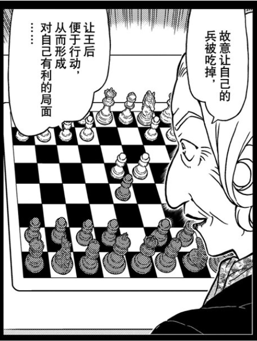
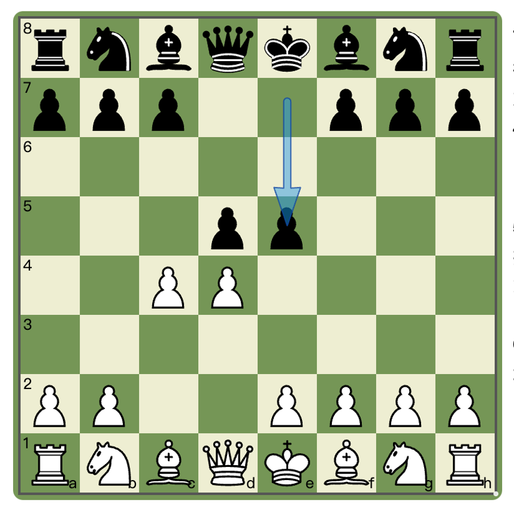
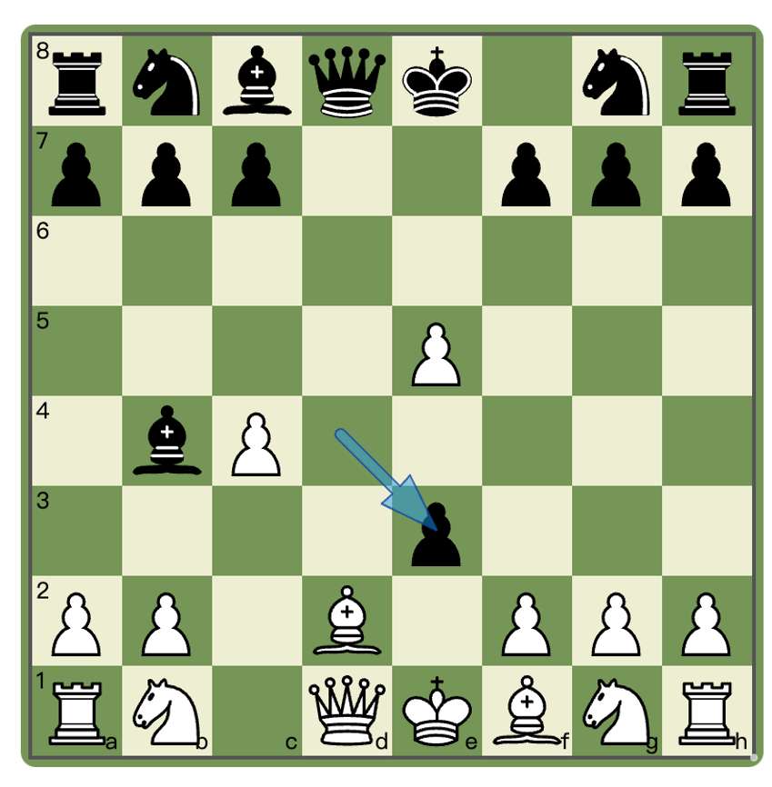
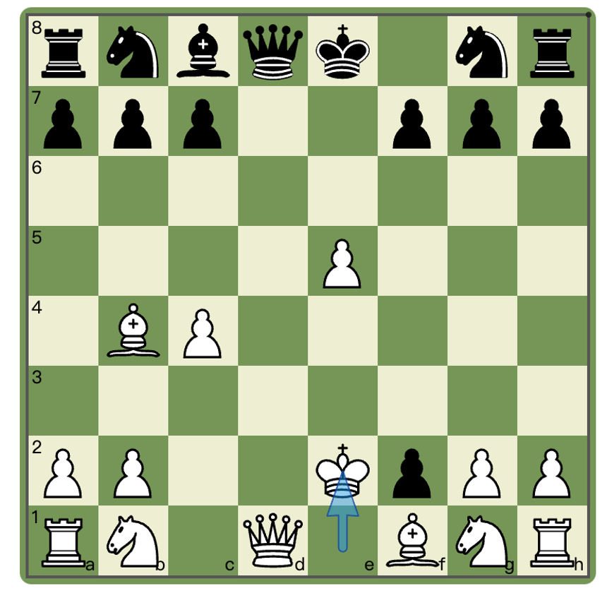
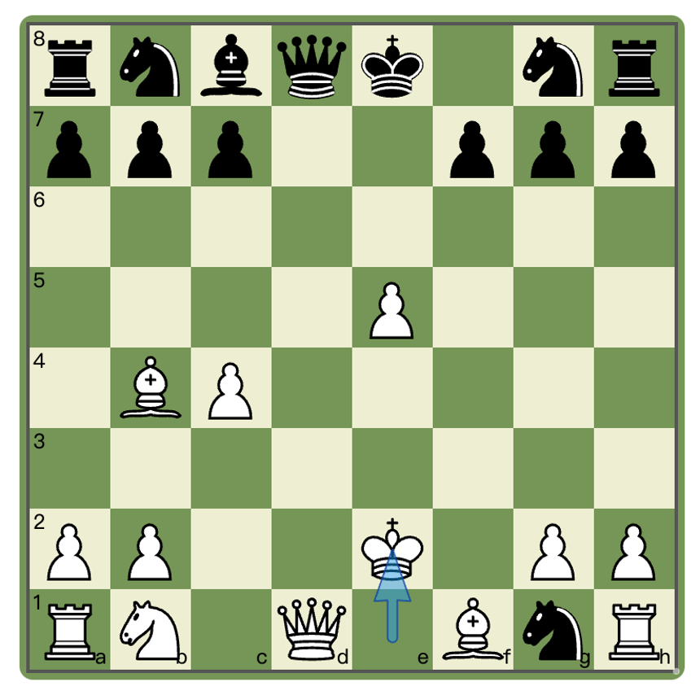
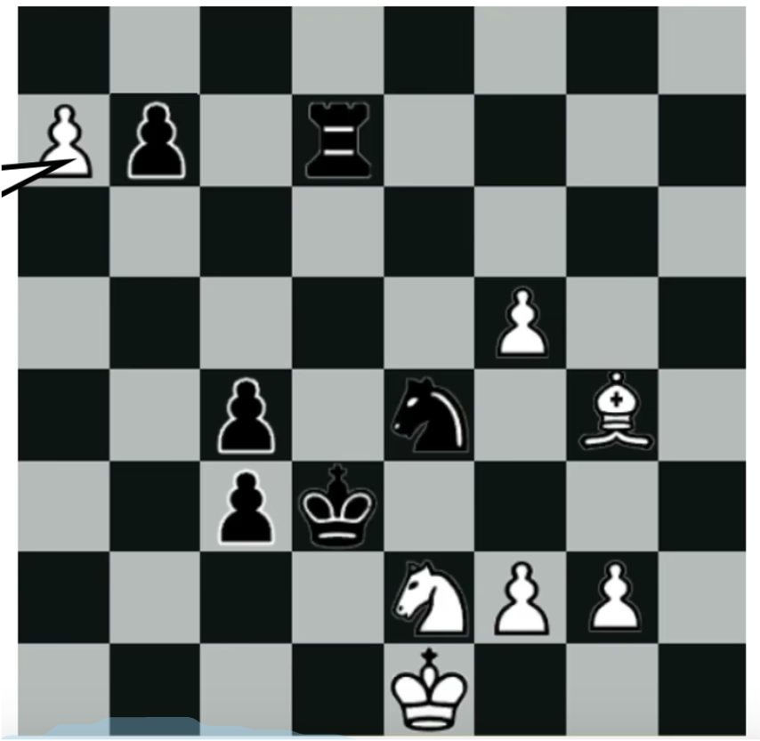
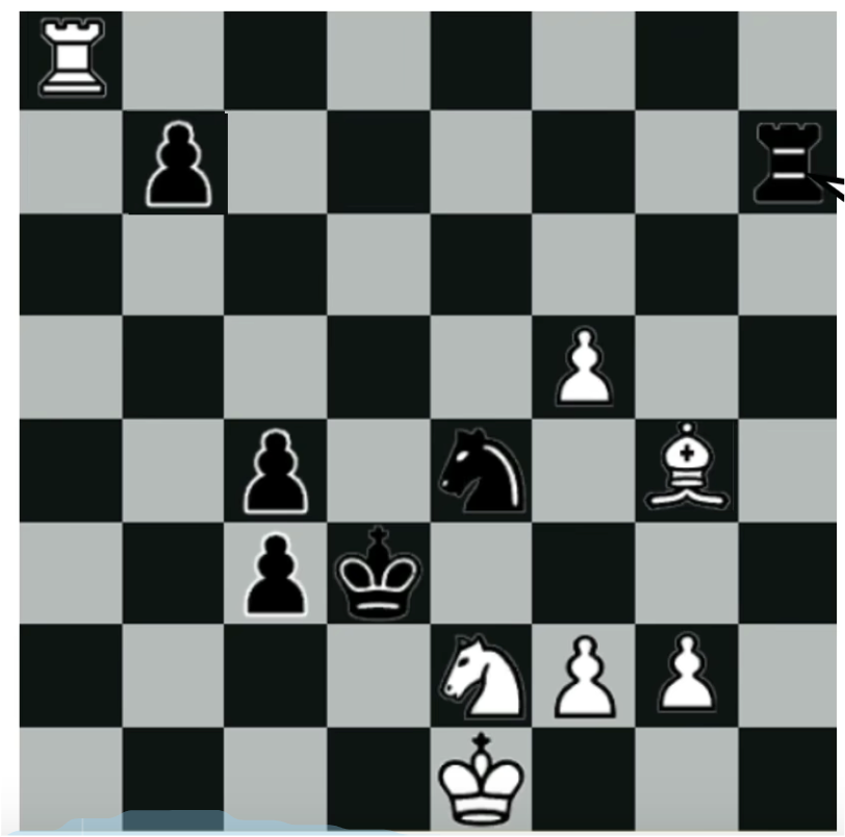

1L 留给 角行主要是考察一下狙击视角问题和解读一下女王之谋的含义；
视角部分有分析图，如果图片楼还是被吞的话请耐心等一下哈~
1. 狙击事件-风吹雨伞落
17年后Rum对若狭留美的狙击行动将棋盘篇的故事推向了高潮。但这里其实留了一个疑问，孩子们听到三声“雷声”，似乎对应的是组织和若狭的枪战交锋，小林老师命悬一线，死里逃生。但问题在于，子弹打到哪里去了？
在场的灰原、后来的柯南、黑田三个会用枪的人都没有找到枪击的痕迹，给出的结论是伞被风吹折了。其实仔细看一下漫画截图，小林老师喊“哇啊”的时候，雨伞已经脱手，向前方飞去（众人视线方向），小林老师一时没站稳，向后倒去（光彦本能躲避方向）。我们不妨闭眼想象，将时钟再往前拨动几秒。
有一股从后往前的力，将雨伞往前推去，之所以会从中间弯折，是因为小林老师手上抓着伞把，给了另一个方向的力。这种往前的力是如此强，以至于伞的边缘都被翻起。随后雨伞脱手，小林后倾。最后形成漫画画面。
这里就产生了一些问题，这种向前的力是哪里来的？我们首先考察狙击时机和狙击地点，前者是小林一行人刚刚踏出大厦的时候（阿笠博士踏出大厦的瞬间），后者是大厦门口那个凹凸部，上方有行道树树冠。朗姆一行在正对着这个丁字路的大楼上下。此时小林等人的前进方向就是笔直地走出大门，前进方向垂直于理论狙击方向。检查不同角度的漫画格子，可以确信，那一瞬间伞是向前飞的。由于伞的弯折、腾飞方向都垂直于狙击方向，这种向前的力应当不是狙击引起的。
孩子们现场得出的结论是，风吹的。但是这里有一个不自然的地方，为什么大家的伞都没事，只有小林的（或者说若狭的）雨伞出了问题？如果再细扣的话，小林有一个后倾的动作，是想把伞拉住（这个正是一般人的正常反应），但是因为伞柄突然弯折，把小林吓了一跳，所以才松手的，也是因为很突然，所以没来得及重新平衡身体，差点向后摔倒了。换言之，也不是说风有多大，而是伞比较脆。这个倒是好理解，若狭老师力大无穷（笑），本章中已经弄断过一把伞，控制好力道捏一下这把伞，可能风稍微吹一下就折了。
小哀没有接这句“风吹的”，只回应以省略号。小哀是站在比较靠后的位置，能够看见小林的伞突然往前飞了。正常来说，那就是风从后往前在吹。但是且慢，从不同视角比对，他们的身后，不是空地，而应当正是大楼的大门口，他们刚刚走出来的地方。风从哪里来？
17年后Rum对若狭留美的狙击行动将棋盘篇的故事推向了高潮。但这里其实留了一个疑问，孩子们听到三声“雷声”，似乎对应的是组织和若狭的枪战交锋，小林老师命悬一线，死里逃生。但问题在于，子弹打到哪里去了？
在场的灰原、后来的柯南、黑田三个会用枪的人都没有找到枪击的痕迹，给出的结论是伞被风吹折了。其实仔细看一下漫画截图，小林老师喊“哇啊”的时候，雨伞已经脱手，向前方飞去（众人视线方向），小林老师一时没站稳，向后倒去（光彦本能躲避方向）。我们不妨闭眼想象，将时钟再往前拨动几秒。
有一股从后往前的力，将雨伞往前推去，之所以会从中间弯折，是因为小林老师手上抓着伞把，给了另一个方向的力。这种往前的力是如此强，以至于伞的边缘都被翻起。随后雨伞脱手，小林后倾。最后形成漫画画面。
这里就产生了一些问题，这种向前的力是哪里来的？我们首先考察狙击时机和狙击地点，前者是小林一行人刚刚踏出大厦的时候（阿笠博士踏出大厦的瞬间），后者是大厦门口那个凹凸部，上方有行道树树冠。朗姆一行在正对着这个丁字路的大楼上下。此时小林等人的前进方向就是笔直地走出大门，前进方向垂直于理论狙击方向。检查不同角度的漫画格子，可以确信，那一瞬间伞是向前飞的。由于伞的弯折、腾飞方向都垂直于狙击方向，这种向前的力应当不是狙击引起的。
孩子们现场得出的结论是，风吹的。但是这里有一个不自然的地方，为什么大家的伞都没事，只有小林的（或者说若狭的）雨伞出了问题？如果再细扣的话，小林有一个后倾的动作，是想把伞拉住（这个正是一般人的正常反应），但是因为伞柄突然弯折，把小林吓了一跳，所以才松手的，也是因为很突然，所以没来得及重新平衡身体，差点向后摔倒了。换言之，也不是说风有多大，而是伞比较脆。这个倒是好理解，若狭老师力大无穷（笑），本章中已经弄断过一把伞，控制好力道捏一下这把伞，可能风稍微吹一下就折了。
小哀没有接这句“风吹的”，只回应以省略号。小哀是站在比较靠后的位置，能够看见小林的伞突然往前飞了。正常来说，那就是风从后往前在吹。但是且慢，从不同视角比对，他们的身后，不是空地，而应当正是大楼的大门口，他们刚刚走出来的地方。风从哪里来？
2023-11-03 13:15 | enjoy诠释0:这段其实有点过度解读了，小林和侦探团三人（除了灰原）谁会脑洞大到想到有人对他们开枪啊2023-11-03 19:36 | 贴吧用户_J7eUEPR:回复 enjoy诠释0 :其实主要指的也就是灰原哀(笑)她在狙击事件前后有两格盯着雨伞【…】的画面；她和博士走在队伍的最后面，对后方有没有刮风也是比较了解的

狙击现场是一个丁字路口，两个狙击手也吐槽，视角其实很差
伞飞出去和狙击应该是两个独立事件，并且伞飞出去要更早一些2. 狙击事件-子弹无处寻
临开枪时，朗姆突然出声阻止，导致两人都抱怨自己射歪了。漫画有意暗示这两枪一枪打到了雨伞，一枪打到了脚下。但如果是这样的话，即使是外行人也能看出，伞会被打断、地上会出现弹坑。这不就暴露了狙击事件的影响了吗？
朗姆是一直在用望远镜观察着对面的。至少在他的视角里，两发子弹不是冲着小林老师方向过去的，狙击事件没有暴露，不然他的心态就没有后来那么平静了。基安蒂和科恩说好了一个打身体、一个打头，漫画是想暗示一发上偏了，一发下偏了。
但是正常情况下都会上偏才对吧？下意识地情况下会控制不好枪的后坐力。这样的话，两发子弹应该是打到行道树上了，而且可能刚巧完全嵌进去了，柯南没意识到这点，也不至于上树非要找到子弹。那小孩子们听到的两声雷声可能就是子弹打到树上的声音，他们看到树冠在摇所以认为有风吹来了。
那第三声雷声，可能就是雨伞飞出去的真正原因，也就是时间线上最早的雷声。这三声雷声一定都是在离少侦很近的地方发生的，不是枪口开枪的声音，枪声没有那么大，若狭和基安蒂科恩都在离少侦很远的地方，如果他们能听到枪声的话，整条大街都应该听到了。
这里猜测，小林老师走出楼门口不久，有什么东西在她的上方爆开了，气浪带走了这把雨伞；因为比较迅疾，伞的边缘都被翻开了一下。由于大家都打着雨伞，没有注意到上方发生的事情；爆开的响声也和其他声音一起被当成雷声，大家又始终没发现其他异常，这件事就被归为雷雨天的自然现象。
临开枪时，朗姆突然出声阻止，导致两人都抱怨自己射歪了。漫画有意暗示这两枪一枪打到了雨伞，一枪打到了脚下。但如果是这样的话，即使是外行人也能看出，伞会被打断、地上会出现弹坑。这不就暴露了狙击事件的影响了吗？
朗姆是一直在用望远镜观察着对面的。至少在他的视角里，两发子弹不是冲着小林老师方向过去的，狙击事件没有暴露，不然他的心态就没有后来那么平静了。基安蒂和科恩说好了一个打身体、一个打头，漫画是想暗示一发上偏了，一发下偏了。
但是正常情况下都会上偏才对吧？下意识地情况下会控制不好枪的后坐力。这样的话，两发子弹应该是打到行道树上了，而且可能刚巧完全嵌进去了，柯南没意识到这点，也不至于上树非要找到子弹。那小孩子们听到的两声雷声可能就是子弹打到树上的声音，他们看到树冠在摇所以认为有风吹来了。
那第三声雷声，可能就是雨伞飞出去的真正原因，也就是时间线上最早的雷声。这三声雷声一定都是在离少侦很近的地方发生的，不是枪口开枪的声音，枪声没有那么大，若狭和基安蒂科恩都在离少侦很远的地方，如果他们能听到枪声的话，整条大街都应该听到了。
这里猜测，小林老师走出楼门口不久，有什么东西在她的上方爆开了，气浪带走了这把雨伞；因为比较迅疾，伞的边缘都被翻开了一下。由于大家都打着雨伞，没有注意到上方发生的事情；爆开的响声也和其他声音一起被当成雷声，大家又始终没发现其他异常，这件事就被归为雷雨天的自然现象。
3. 后翼弃兵与反弃兵
棋盘篇通篇充满了各种将棋和国际象棋的暗示。朗姆用国际象棋中的【弃兵】战术形容若狭的冷酷狠毒。
篇章中借阿曼达之口详细解释过这个战术，【后翼弃兵】指的是开局送掉小兵（Pawn），便于让女王开展行动，形成有利于自己的局面。这个原本是羽田浩司给阿曼达出的题目，他在棋盘上摆下了后翼弃兵的开局，阿曼达的回复是【既然如此，我就来迎战试试吧】。后续两人没有继续讨论这盘棋局。
面对【后翼弃兵】，（国际象棋中的）黑方主要有两种策略，一是吃掉对方的小兵，得一子，但是把白女王面前的障碍清除掉了，也就失去了中路的控制权；二是继续拒绝弃兵，增兵拱卫中路。
在狙击事件中朗姆选择的是第二种策略，这本身也是更保守稳妥的战术。他比较吃惊的是若狭竟然真的能把身边人、甚至小孩子当成随手可以抛弃的小兵。花坛篇，朗姆观察了很久，还是没在学校动手，可能是担心把若狭逼急了，丧心病狂的若狭留美会劫持全校师生为人质，死也要搞个大新闻。朗姆感慨，看来不能用老思维。老思维指的无疑就是17年前他对付阿曼达时想用的方法，拿对方亲近的人逼她就范。
但实际上，阿曼达给出的是更激进的第三种策略，【反弃兵】，不吃对方的子，反而主动给对方送另一个小兵，目的是为了保护自己的【第一步小兵】，来和对方争夺主动权，类似真实对局中的阿尔宾反弃兵战术。让朗姆没想到的是，阿曼达不仅没把自己当棋手、甚至没把自己当女王，而是把自己当成了小兵。朗姆可能也意识到接近阿曼达过于顺利了，但还是没忍住，吃掉了这个棋子；阿曼达用自己的生命完成了为反击所作的第一步牺牲。
羽田浩司在见到浅香的时候，除了意识到局势危险外，也意识到了阿曼达所给出的答案。到了羽田浩司做选择的时候了。阿尔宾反弃兵战术，除了要牺牲一个小兵外，第二步还不得不牺牲一个主教（相当于将棋中的【角行】）来护送【第一步小兵】继续前进。羽田浩司认可了这个战术，决定为萍水相逢的蕾切尔浅香牺牲自己的生命。不仅仅是为了感情上的一见钟情，更是为了他对浅香说的那句话【不容易被敌人发现，只要保持一丝关注，总有一天可以实现反击】。这一刻，羽田浩司就是当之无愧的、【远眺的角行】。
为什么要牺牲主教来掩护小兵？因为她的目标小，也因为她离敌人的心脏很近。阿尔宾反弃兵战术的转折，就在于【第一步小兵】抵达底线的那一刻，一方面可以直接威胁对方的国王，另一方面，根据国际象棋的升变规则，小兵可以【升变为女王】，彻底拉响反击的序曲。狙击事件末尾，若狭留美在滂沱大雨中再次想起了羽田浩司当初救她的理由，【我想要这么做啊，算是贯彻初衷】，她紧紧握住了身为护身符的【角行】。这一刻的若狭留美，是否已经成为【女王】？抑或是通过升变来扮演着城堡、骑士或主教的角色？
棋盘篇通篇充满了各种将棋和国际象棋的暗示。朗姆用国际象棋中的【弃兵】战术形容若狭的冷酷狠毒。
篇章中借阿曼达之口详细解释过这个战术，【后翼弃兵】指的是开局送掉小兵（Pawn），便于让女王开展行动，形成有利于自己的局面。这个原本是羽田浩司给阿曼达出的题目，他在棋盘上摆下了后翼弃兵的开局，阿曼达的回复是【既然如此，我就来迎战试试吧】。后续两人没有继续讨论这盘棋局。
面对【后翼弃兵】，（国际象棋中的）黑方主要有两种策略，一是吃掉对方的小兵，得一子，但是把白女王面前的障碍清除掉了，也就失去了中路的控制权；二是继续拒绝弃兵，增兵拱卫中路。
在狙击事件中朗姆选择的是第二种策略，这本身也是更保守稳妥的战术。他比较吃惊的是若狭竟然真的能把身边人、甚至小孩子当成随手可以抛弃的小兵。花坛篇，朗姆观察了很久，还是没在学校动手，可能是担心把若狭逼急了，丧心病狂的若狭留美会劫持全校师生为人质，死也要搞个大新闻。朗姆感慨，看来不能用老思维。老思维指的无疑就是17年前他对付阿曼达时想用的方法，拿对方亲近的人逼她就范。
但实际上，阿曼达给出的是更激进的第三种策略，【反弃兵】，不吃对方的子，反而主动给对方送另一个小兵，目的是为了保护自己的【第一步小兵】，来和对方争夺主动权，类似真实对局中的阿尔宾反弃兵战术。让朗姆没想到的是，阿曼达不仅没把自己当棋手、甚至没把自己当女王，而是把自己当成了小兵。朗姆可能也意识到接近阿曼达过于顺利了，但还是没忍住，吃掉了这个棋子；阿曼达用自己的生命完成了为反击所作的第一步牺牲。
羽田浩司在见到浅香的时候，除了意识到局势危险外，也意识到了阿曼达所给出的答案。到了羽田浩司做选择的时候了。阿尔宾反弃兵战术，除了要牺牲一个小兵外，第二步还不得不牺牲一个主教（相当于将棋中的【角行】）来护送【第一步小兵】继续前进。羽田浩司认可了这个战术，决定为萍水相逢的蕾切尔浅香牺牲自己的生命。不仅仅是为了感情上的一见钟情，更是为了他对浅香说的那句话【不容易被敌人发现，只要保持一丝关注，总有一天可以实现反击】。这一刻，羽田浩司就是当之无愧的、【远眺的角行】。
为什么要牺牲主教来掩护小兵？因为她的目标小，也因为她离敌人的心脏很近。阿尔宾反弃兵战术的转折，就在于【第一步小兵】抵达底线的那一刻，一方面可以直接威胁对方的国王，另一方面，根据国际象棋的升变规则，小兵可以【升变为女王】，彻底拉响反击的序曲。狙击事件末尾，若狭留美在滂沱大雨中再次想起了羽田浩司当初救她的理由，【我想要这么做啊，算是贯彻初衷】，她紧紧握住了身为护身符的【角行】。这一刻的若狭留美，是否已经成为【女王】？抑或是通过升变来扮演着城堡、骑士或主教的角色？

羽田浩司给阿曼达出的题目，后翼弃兵开局，下一手轮到执黑一方行动，选择是否吃掉对方送上来的白色小兵
反弃兵战术，不仅不吃对方的子，还要再给对方送一个子


反弃兵战术的后续与转折，再次牺牲一个比较大的棋子（主教），护送第一步走出来小兵一路抵达底线，完成升变。不过真实对局中一般不会直接升变为女王。4. 恶魔与围玉
棋盘篇后四章标题依次为：恶魔、角行、围玉、女王。其中如前文所述，【角行】与【女王】是有明确指向意义的棋子，恶魔和围玉其实也和棋局相关。
按照漫画剧情，恶魔应当指的就是朗姆，在棋盘中表现为沾了血的白骑士。这里的骑士不是Knight，而是Knightmare，翻译成黑暗骑士也许更准确一些。过度解读一下的话，knightmare和nightmare（梦魇）是谐音梗， nightmare词源中的mare，指的是一种传说中的，能让人窒息而亡的恶魔。阿曼达服用A药后的症状确实很像呼吸困难。或者可以将这个骑士理解为Horsemen，也即天启骑士。这种语境下白马骑士代表的是“支配”，正是朗姆意图对阿曼达母女做的事情。
锐眼的恶魔旨在强调【朗姆的眼睛】，不仅仅是说他的眼睛像蛇眼一样（这一点黑田当年就已经注意到了），更是在说他的眼睛有超能力，不要直视他的眼睛。后一点是柯南、黑田、乃至当前所有确定为红方的人都不知道的。从目前的情况来看，朗姆的超能力左眼被打瞎，右眼没有这么强的超能力，但依然有较强的记忆力、对细节依然敏感（迅速判断出小林和若狭鞋不一样）。反而是从若狭的行为来看，她很有可能已经知道了朗姆的这项特点，知道朗姆肯定能看出差别，才会做出针对性的反攻策略。
围玉指的是将棋中围绕玉将步下的防御阵型，这里用来比喻羽田浩司对浅香的保护。将棋中【角行】可以升变为【龙马】，两个名称刻在棋子的正反两面。羽田浩司用【远角有好手】形容角行的价值。由于走法差异，角行更适合远程进攻，龙马参加围玉、进行防御的价值更大。同样由于行棋方式，角行不太容易被敌方抓住；再加上将棋特有的打出规则，如果手上有角行持驹、准备打出的时候，可以先用送吃的方式给敌人设下陷阱。
羽田浩司把【角行】作为护身符送给浅香，自己选择扮演【龙马】的角色来保护她，也期待浅香能够等到合适的时机给予敌人致命一击。阿曼达休斯和羽田浩司分别用国际象棋和将棋的方式给予了她活下去的祝福。而蕾切尔浅香（ Rachel Asaka）则注定要走在这条漫长的【复仇】（Rache）之路上，直到最终消灭恶魔。
棋盘篇后四章标题依次为：恶魔、角行、围玉、女王。其中如前文所述，【角行】与【女王】是有明确指向意义的棋子，恶魔和围玉其实也和棋局相关。
按照漫画剧情，恶魔应当指的就是朗姆，在棋盘中表现为沾了血的白骑士。这里的骑士不是Knight，而是Knightmare，翻译成黑暗骑士也许更准确一些。过度解读一下的话，knightmare和nightmare（梦魇）是谐音梗， nightmare词源中的mare，指的是一种传说中的，能让人窒息而亡的恶魔。阿曼达服用A药后的症状确实很像呼吸困难。或者可以将这个骑士理解为Horsemen，也即天启骑士。这种语境下白马骑士代表的是“支配”，正是朗姆意图对阿曼达母女做的事情。
锐眼的恶魔旨在强调【朗姆的眼睛】，不仅仅是说他的眼睛像蛇眼一样（这一点黑田当年就已经注意到了），更是在说他的眼睛有超能力，不要直视他的眼睛。后一点是柯南、黑田、乃至当前所有确定为红方的人都不知道的。从目前的情况来看，朗姆的超能力左眼被打瞎，右眼没有这么强的超能力，但依然有较强的记忆力、对细节依然敏感（迅速判断出小林和若狭鞋不一样）。反而是从若狭的行为来看，她很有可能已经知道了朗姆的这项特点，知道朗姆肯定能看出差别，才会做出针对性的反攻策略。
围玉指的是将棋中围绕玉将步下的防御阵型，这里用来比喻羽田浩司对浅香的保护。将棋中【角行】可以升变为【龙马】，两个名称刻在棋子的正反两面。羽田浩司用【远角有好手】形容角行的价值。由于走法差异，角行更适合远程进攻，龙马参加围玉、进行防御的价值更大。同样由于行棋方式，角行不太容易被敌方抓住；再加上将棋特有的打出规则，如果手上有角行持驹、准备打出的时候，可以先用送吃的方式给敌人设下陷阱。
羽田浩司把【角行】作为护身符送给浅香，自己选择扮演【龙马】的角色来保护她，也期待浅香能够等到合适的时机给予敌人致命一击。阿曼达休斯和羽田浩司分别用国际象棋和将棋的方式给予了她活下去的祝福。而蕾切尔浅香（ Rachel Asaka）则注定要走在这条漫长的【复仇】（Rache）之路上，直到最终消灭恶魔。
5. 1 王车易位与女王之谋
青山在访谈中数次提过，他很享受把红方角色塑造成伪黑方形象，最后揭露的时候让人大吃一惊的感觉。赤井秀一初登场的时候就很黑，除了高山南以外，多数一起配音的声优都不知道秀一是好人。青山也提到了目前在画的若狭老师，以及他很喜欢的怪老头系列。
也正是因为青山的恶趣味，所以在分析主线人物的时候不能被氛围带偏，还是要看角色实际上做了哪些行为。若狭确实是漫画中难得的灰色人物，这种灰色固然是因为她的性格态度、道德水平、更是因为她所表现出来的、【对于其他红黑机构的警惕感和不信任感】。若狭留美登场的寥寥数个系列，已经和日本公安、黑衣组织、FBI几个机构有过交锋，看起来她和这些机构都没有直接关联。若狭留美目前还没有直接接触过CIA和MI6，也许有读者看不到的细节，但从她用枪还要现抢来看，应该就是不属于哪个情报机构，单纯比较孤狼的一个复仇者，最多有一两个合作者和同路人罢了。
棋盘篇的雨中狙击看起来是一场遭遇战，【实际上双方应该都已经有所准备】。朗姆冒着大雨也要执行狙击任务、就像是意识到对方随时会跑一样，狙击手位置被对方锁定后，也极其谨慎地选择了撤退；若狭抬头看到了监控摄像头的异动，就立刻决定一个人跑出去抢劫，显然是断言有人来杀自己了。
棋盘篇抢劫和手臂白皙篇见死不救，是若狭留美这个人物最明确的两个黑点，是她无法无天、冷漠自私的体现，不过这对漫画中的柯南来说，还不算无法接受的点，柯南基本是以高道德标准要求自己，很少对别人进行道德审判，尤其是在红黑对决方面。柯南主要是意识到，若狭留美对包括警方在内的公权力机构并不信任，但对孩子们还挺好的，所以既警惕着若狭，某种程度上又在掩护若狭。在过去的十七年中，若狭留美可能和某些重要红方角色有过会面，【知道了很多不能分享给警方的关键秘密】，所以才变得越来越孤狼；在读者问答中，青山回避了若狭留美的教龄问题，所以她可能不是突然伪装成教师的，而是一直用教师的身份来隐藏自己，若狭留美这个名字也许已经用了很久了。
青山在访谈中数次提过，他很享受把红方角色塑造成伪黑方形象，最后揭露的时候让人大吃一惊的感觉。赤井秀一初登场的时候就很黑，除了高山南以外，多数一起配音的声优都不知道秀一是好人。青山也提到了目前在画的若狭老师，以及他很喜欢的怪老头系列。
也正是因为青山的恶趣味，所以在分析主线人物的时候不能被氛围带偏，还是要看角色实际上做了哪些行为。若狭确实是漫画中难得的灰色人物，这种灰色固然是因为她的性格态度、道德水平、更是因为她所表现出来的、【对于其他红黑机构的警惕感和不信任感】。若狭留美登场的寥寥数个系列，已经和日本公安、黑衣组织、FBI几个机构有过交锋，看起来她和这些机构都没有直接关联。若狭留美目前还没有直接接触过CIA和MI6，也许有读者看不到的细节，但从她用枪还要现抢来看，应该就是不属于哪个情报机构，单纯比较孤狼的一个复仇者，最多有一两个合作者和同路人罢了。
棋盘篇的雨中狙击看起来是一场遭遇战，【实际上双方应该都已经有所准备】。朗姆冒着大雨也要执行狙击任务、就像是意识到对方随时会跑一样，狙击手位置被对方锁定后，也极其谨慎地选择了撤退；若狭抬头看到了监控摄像头的异动，就立刻决定一个人跑出去抢劫，显然是断言有人来杀自己了。
棋盘篇抢劫和手臂白皙篇见死不救，是若狭留美这个人物最明确的两个黑点，是她无法无天、冷漠自私的体现，不过这对漫画中的柯南来说，还不算无法接受的点，柯南基本是以高道德标准要求自己，很少对别人进行道德审判，尤其是在红黑对决方面。柯南主要是意识到，若狭留美对包括警方在内的公权力机构并不信任，但对孩子们还挺好的，所以既警惕着若狭，某种程度上又在掩护若狭。在过去的十七年中，若狭留美可能和某些重要红方角色有过会面，【知道了很多不能分享给警方的关键秘密】，所以才变得越来越孤狼；在读者问答中，青山回避了若狭留美的教龄问题，所以她可能不是突然伪装成教师的，而是一直用教师的身份来隐藏自己，若狭留美这个名字也许已经用了很久了。
5.2 王车易位与女王之谋
无论她有着怎样的过去，无论她对小林和孩子们是否真情实感，在棋盘篇这个时间点，她明确有人要来追杀自己、而她需要留在帝丹小学，必然会和小林她们接触。以她自己十七年前的经历来看，如果她自己逃掉了、消失掉了，组织很有可能会绑架小林他们，逼自己现身就范。
那她面临的难题、不仅是要保护自己的安全，更要想办法让组织打消对小林和孩子们的图谋。从这个角度看，小林确实被当成了棋子，但并不是朗姆理解的小兵，而是国王。如果小林被杀，帝丹小学一片混乱的情况下，若狭原来的潜伏计划自然也泡汤了。
王车易位是国际象棋中的特殊规则，一般是通过易位，把城堡换到攻击视野更好的地方，国王换到更安全的地方。但国际象棋的原始规则存在漏洞。据说1971年，有一位棋手拿国王作诱饵，让小兵冲到底线成功升变为城堡，然后执行王车易位，不仅让国王瞬间逃出重围，还用新升变的城堡从后方反过来将了敌人的军，局势立刻反败为胜。于是国际棋联才在1972年补充修改了规则，强制要求王车易位时两个棋子必须要在同一横行，堵上了这个bug。
若狭留美也许就是这样的思路，首先把组织的火力吸引到小林身上，在关键时刻再突然揭开【易位】的秘密，自己从后方攻敌必救，成功化解了两难的危局，避免了十七年前的悲剧重演。这是一个差一分都有可能造成不可挽回损失的危险计划，只有若狭留美这样【习惯了失去一切、又想赢得一切】的灰色人物才会制定这样的策略。就像是她在帐篷篇为救回步美所做的那样。
那么，在重新梳理过棋盘篇的剧情之后，如何理解漫画标题中的【女王之谋】？依然有两个解释：①【弃子争先】，通过弃兵这样必要的牺牲，换取主动权，目标直指最后胜利；②【女王不是被保护的一方，而是保护别人的一方】，保护女王，是为了将她送到更关键的位置上；而正因为女王的强大，她可以威慑到敌人，成功保护自己想要保护的事物；哪怕是再微小的事物，都有可能蕴含着反败为胜的希望种子。
阿曼达就是这样的女王，也许若狭留美有一天也会成为这样的女王。
无论她有着怎样的过去，无论她对小林和孩子们是否真情实感，在棋盘篇这个时间点，她明确有人要来追杀自己、而她需要留在帝丹小学，必然会和小林她们接触。以她自己十七年前的经历来看，如果她自己逃掉了、消失掉了，组织很有可能会绑架小林他们，逼自己现身就范。
那她面临的难题、不仅是要保护自己的安全，更要想办法让组织打消对小林和孩子们的图谋。从这个角度看，小林确实被当成了棋子，但并不是朗姆理解的小兵，而是国王。如果小林被杀，帝丹小学一片混乱的情况下，若狭原来的潜伏计划自然也泡汤了。
王车易位是国际象棋中的特殊规则，一般是通过易位，把城堡换到攻击视野更好的地方，国王换到更安全的地方。但国际象棋的原始规则存在漏洞。据说1971年，有一位棋手拿国王作诱饵，让小兵冲到底线成功升变为城堡，然后执行王车易位，不仅让国王瞬间逃出重围，还用新升变的城堡从后方反过来将了敌人的军，局势立刻反败为胜。于是国际棋联才在1972年补充修改了规则，强制要求王车易位时两个棋子必须要在同一横行，堵上了这个bug。
若狭留美也许就是这样的思路，首先把组织的火力吸引到小林身上，在关键时刻再突然揭开【易位】的秘密，自己从后方攻敌必救，成功化解了两难的危局，避免了十七年前的悲剧重演。这是一个差一分都有可能造成不可挽回损失的危险计划，只有若狭留美这样【习惯了失去一切、又想赢得一切】的灰色人物才会制定这样的策略。就像是她在帐篷篇为救回步美所做的那样。
那么，在重新梳理过棋盘篇的剧情之后，如何理解漫画标题中的【女王之谋】？依然有两个解释：①【弃子争先】，通过弃兵这样必要的牺牲，换取主动权，目标直指最后胜利；②【女王不是被保护的一方，而是保护别人的一方】，保护女王，是为了将她送到更关键的位置上；而正因为女王的强大，她可以威慑到敌人，成功保护自己想要保护的事物；哪怕是再微小的事物，都有可能蕴含着反败为胜的希望种子。
阿曼达就是这样的女王，也许若狭留美有一天也会成为这样的女王。



6.1 最后几个不太靠谱的猜测
重新排列一下若狭留美的名字
WAKASA RUMI 若狭 留美
WRU? I’M ASAKA. 你是谁？我是浅香。
手臂白皙篇，若狭上了报纸，名字也被公开了出去，黑田和胁田都注意到了这个问题，两人都是知道浅香这个人的存在的。从棋盘篇黑田的自述来看，光看长相其实他是不太确定若狭和浅香是同一个人（因为墨镜的关系，他当年比较急也没细看），所以也可能是读出了若狭留美名字的含义，主动跑过去试探她的。
胁田的反应比较谨慎迟缓。他和黑田不一样，黑田和浅香没有根本性的矛盾，黑田找浅香可能是想澄清误会；朗姆则必然会犹豫，浅香主动暴露身份是想干什么，是不是在诱敌深入？（胁田语“还真是机智呀”）
合理推断，他把调查若狭留美的事情安排给了波本。因为同时打两份工，时间比较紧，牧场篇安室透一边用降谷零的身份执行日本公安的任务，一边用波本的身份执行黑衣组织的任务。他偷拍若狭、扣押将棋的时候是在替朗姆工作，所以挨打不怨（笑）。
重新排列一下若狭留美的名字
WAKASA RUMI 若狭 留美
WRU? I’M ASAKA. 你是谁？我是浅香。
手臂白皙篇，若狭上了报纸，名字也被公开了出去，黑田和胁田都注意到了这个问题，两人都是知道浅香这个人的存在的。从棋盘篇黑田的自述来看，光看长相其实他是不太确定若狭和浅香是同一个人（因为墨镜的关系，他当年比较急也没细看），所以也可能是读出了若狭留美名字的含义，主动跑过去试探她的。
胁田的反应比较谨慎迟缓。他和黑田不一样，黑田和浅香没有根本性的矛盾，黑田找浅香可能是想澄清误会；朗姆则必然会犹豫，浅香主动暴露身份是想干什么，是不是在诱敌深入？（胁田语“还真是机智呀”）
合理推断，他把调查若狭留美的事情安排给了波本。因为同时打两份工，时间比较紧，牧场篇安室透一边用降谷零的身份执行日本公安的任务，一边用波本的身份执行黑衣组织的任务。他偷拍若狭、扣押将棋的时候是在替朗姆工作，所以挨打不怨（笑）。
6.2 最后几个不太靠谱的猜测
那么根据波本的报告，【朗姆其实已经能确定若狭就是浅香了】，但他明显有点不敢相信，浅香跑到孩子堆里干什么？哪怕时间胶囊篇被恶狠狠地盯着，他还是要再问一下柯南。柯南的反应其实给他吃了一个定心丸，若狭在学校会伪装自己，没有什么异动，说明学校不是浅香的窝点，浅香目前可能真的是一个人，没有什么同伙，甚至已经抛下前尘往事重新做人了。
当然，浅香疑似听过朗姆的声音，朗姆不可能放过她的。所以下一话棋盘篇朗姆得知柯南和若狭去国际象棋大赛了之后，会冒雨立刻跑过去布置狙击现场（柯南没车，可能到的比朗姆还晚），也是去的时候注意到了若狭的装束。但此时【朗姆心中的疑惑还没完全解除】，在若狭发动反击的同时，还是担心一切都是浅香（以及朗姆怀疑她背后还有别人）在钓鱼的阴谋，保险起见撤退了。
那么根据波本的报告，【朗姆其实已经能确定若狭就是浅香了】，但他明显有点不敢相信，浅香跑到孩子堆里干什么？哪怕时间胶囊篇被恶狠狠地盯着，他还是要再问一下柯南。柯南的反应其实给他吃了一个定心丸，若狭在学校会伪装自己，没有什么异动，说明学校不是浅香的窝点，浅香目前可能真的是一个人，没有什么同伙，甚至已经抛下前尘往事重新做人了。
当然，浅香疑似听过朗姆的声音，朗姆不可能放过她的。所以下一话棋盘篇朗姆得知柯南和若狭去国际象棋大赛了之后，会冒雨立刻跑过去布置狙击现场（柯南没车，可能到的比朗姆还晚），也是去的时候注意到了若狭的装束。但此时【朗姆心中的疑惑还没完全解除】，在若狭发动反击的同时，还是担心一切都是浅香（以及朗姆怀疑她背后还有别人）在钓鱼的阴谋，保险起见撤退了。
6.3 最后几个不太靠谱的猜测
浅香的身上依然充满了谜团。手臂白皙篇，她上新闻是故意想要吸引谁来找她吗？还是单纯的一场意外？如果是要等人来找她的话，她等的显然不是黑田，并没有想和黑田相认的意思；也不一定是真的在钓鱼朗姆，她吓退朗姆的狙击队伍之后没有像饿狼一样孤注一掷追上去咬人，哪怕朗姆已经开始抄她的家了，她也坚持要留在帝丹小学。【是她对柯南、灰原的观察、试探还没有结束吗？还是她在等谁来和她会和？】
结合青山问答来看，若狭留美这个假名中，【留美】可能是一个比较关键的因素，若狭这个姓反而有可能是后凑的。只是不知道浅香是基于什么原因，选择了这个可能代表【青春美丽永驻】的名字。
浅香的身上依然充满了谜团。手臂白皙篇，她上新闻是故意想要吸引谁来找她吗？还是单纯的一场意外？如果是要等人来找她的话，她等的显然不是黑田，并没有想和黑田相认的意思；也不一定是真的在钓鱼朗姆，她吓退朗姆的狙击队伍之后没有像饿狼一样孤注一掷追上去咬人，哪怕朗姆已经开始抄她的家了，她也坚持要留在帝丹小学。【是她对柯南、灰原的观察、试探还没有结束吗？还是她在等谁来和她会和？】
结合青山问答来看，若狭留美这个假名中，【留美】可能是一个比较关键的因素，若狭这个姓反而有可能是后凑的。只是不知道浅香是基于什么原因，选择了这个可能代表【青春美丽永驻】的名字。
2023-10-14 19:16 | 贴吧用户_QC7XaCG:要不去分析文吧或柯吧再发一次？感觉很厉害的文章，但感觉这边最近挺冷清的样子……2023-10-14 23:58 | 贴吧用户_J7eUEPR:回复 贴吧用户_QC7XaCG :感谢支持~大家还在等青山下次更新主线，冒泡的比较少~我截两张图发到柯吧去让大家吐槽一下吧~2023-10-30 06:56 | 阿修罗七号:回复 贴吧用户_QC7XaCG :柯南吧都是CP党，研究漫画的还是在米花吧2024-01-14 07:23 | 冬之夏利◆:若狭＝wakasa＝若さ＝年轻
是的 我也认为若狭其实并不可能会把小林和孩子推出去 而是预判了朗姆的心理。少侦说“听到了三声打雷” 应该有一枪是若狭打的，目的是同时揭露拿伞的是小林。
这其实跟海猿岛赤井同时开枪一个逻辑
这其实跟海猿岛赤井同时开枪一个逻辑
有点意思 关注收藏了，楼主摩多摩多
国际象棋战术的解读很有意思！
若狭在等的会不会是55呢
若狭在等的会不会是55呢
2023-10-25 19:02 | 贴吧用户_J7eUEPR:感谢支持~我这里也倾向如果务武还活着的话，应该会和浅香约定一个比较隐蔽的联系方式，可能若狭主动上报纸是为了强调自己现在是帝丹小学的老师，在她要等的人来帝丹找她之前还不能离开2023-10-25 19:05 | 贴吧用户_J7eUEPR:也有吧友提过其他可能性，比如若狭要等的是宫野志保，两人以前没见过面，但是通过某种渠道有过联系和约定；漫画中很多篇章都会刻意放一个小哀在读报纸的镜头；只是若狭凑巧到了帝丹小学之后两人一下子都没有认出对方2023-11-03 01:38 | 曾祺五味:回复 贴吧用户_J7eUEPR :一个不负责任的胡乱脑洞：会不会若狭老师等的人是务武的家人，比如世良玛丽呢？2023-11-03 01:49 | 贴吧用户_J7eUEPR:回复 曾祺五味 :确实有吧友推测过玛丽和浅香也许有联络(玛丽似乎知道浅香是女人；冲矢昴问过小兰园子最近有没有一个叫浅香的、身手很好的女人接近真纯)不过最近玛丽母女出场的比较少，还缺少更进一步的证据2023-11-03 02:38 | 曾祺五味:回复 Pseudocirrus :羽田-阿曼达-浅香-务武-玛丽-贝尔摩德-艾莲娜-明美-朗姆 这个线索环，现在了解内情，并有能力把相关人员信息整合的红方，只有灰原和秀一。偏偏这两个谜语人还在外面绕圈子，打破循环的进度条遥遥无期。萨拉热窝火药桶再拖下去，就要哑火了。2023-11-03 02:45 | 贴吧用户_J7eUEPR:回复 曾祺五味 :其实也有推论认为，寻找玛利亚篇结尾前的一小段空白时间里，工藤优作分别和小哀和冲矢昴有过交流，掌握了一些两人不愿意告诉柯南的情报；不知道作者是否会在这个方面展开，也许要看下一个主线篇章中工藤夫妇是如何行动的（笑）2023-11-03 03:20 | 曾祺五味:回复 贴吧用户_J7eUEPR :灰原红茶论可以说不算是推论，是既成事实（？）73在动森（或者是雪莉通讯社）以灰原的口吻说过“红茶会，工藤君你不知道吧”。 灰原在玛利亚篇开头说“我会想办法”，这个伏笔在结尾没有回收。2023-11-03 03:22 | 曾祺五味:回复 贴吧用户_J7eUEPR :在伦敦篇灰原已经主动邀请工藤夫妇联手拯救小新一，而红修篇两方关系，尤其是灰原和有希子更加亲密，灰原不可能坐视不管。2023-11-03 03:22 | 曾祺五味:回复 贴吧用户_J7eUEPR :玛利亚➕红茶会的信息点之一：酒厂boss是乌丸莲耶，酒厂一定会来调查工藤新一。这是只有对酒厂深入了解的人才能确认无误的情报。工藤家周围的这个人是谁？ONLY灰原哀。2023-11-03 03:22 | 曾祺五味:我服了这什么破系统，不仅要分段发，写了一大段，一句都发不出去2023-11-03 03:23 | 曾祺五味:只能捡要紧的说

工藤夫妇已经注意到若狭留美了
很有意思的解读
很有意思，支持一下。
若狭和小哀应该有联系的吧，漫画里不是出现了若狭有a药名单嘛，小哀也对若狭有莫名的信任
若狭和小哀应该有联系的吧，漫画里不是出现了若狭有a药名单嘛，小哀也对若狭有莫名的信任
(⊙o⊙)哇，分析得好厉害
很帅啊
好奇这个女王之谋，王后是若狭还是哀，哀应该是有参加红茶会的，但是怎么跟若狭搭上线的。会不会来一波哀导的操作也不清楚，看73后续更新了，今年能不能把朗姆篇完结了啊
蹲
我想要看若狭，后面漫画不希望再出现其他的了，我曾经特别喜欢的服部、基德还有恋爱物语的那帮人都不要再出现啦，我想要主线，想要看若狭、玛丽和其他主线人物的联系，话说漫画里贝姐、琴爷都好久没登场了